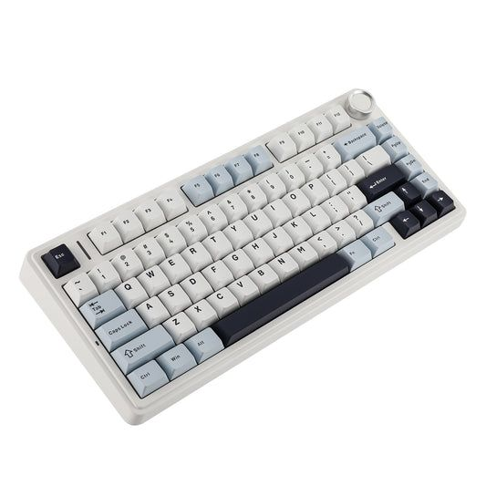
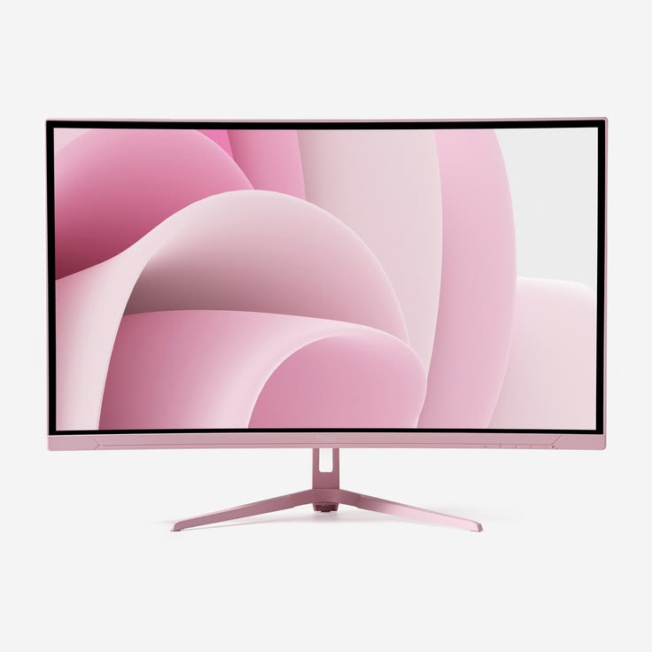
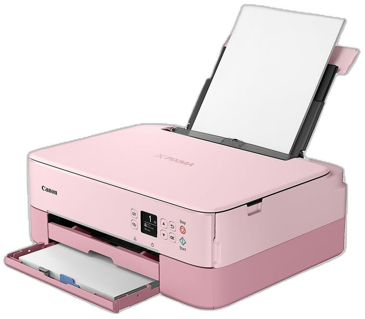
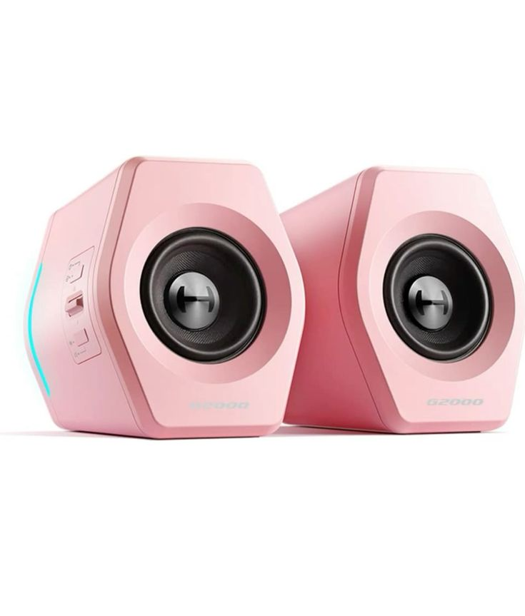
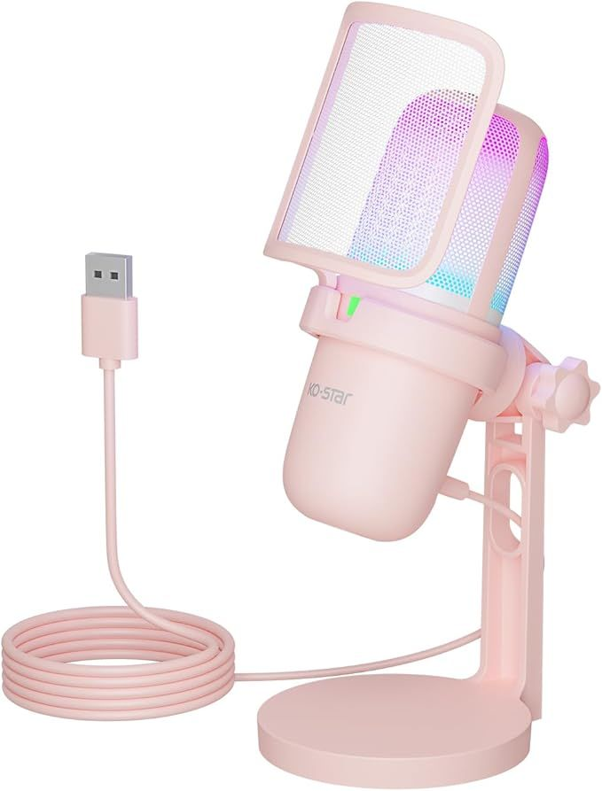
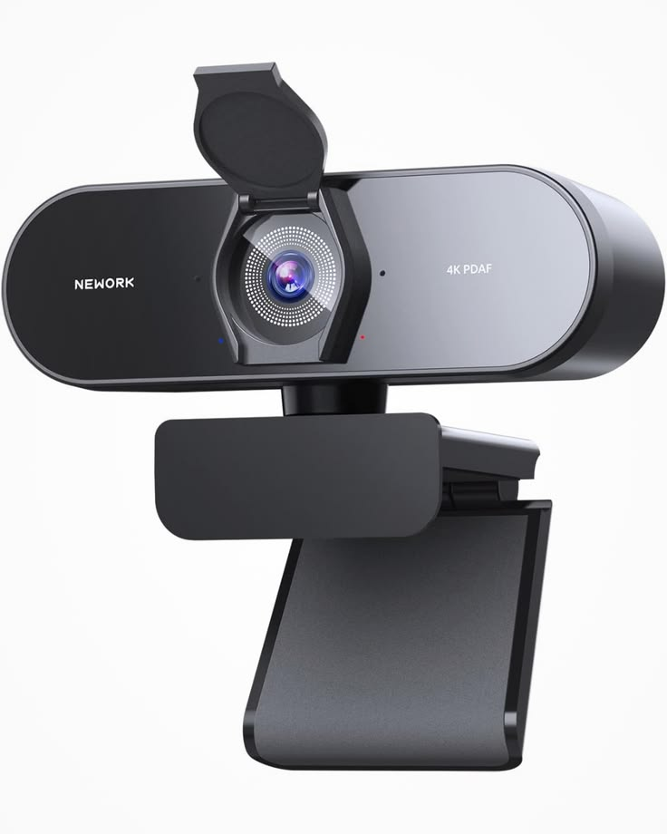

Computer Hardware Overview
Hardware refers to the physical elements that make up a computer system.
Key Hardware Categories:
- Central Processing Unit (CPU): Executes program instructions and performs calculations.
- Random Access Memory (RAM): Provides temporary high-speed data storage for active apps.
- Storage Devices (SSD / HDD): Holds non-volatile data, files, and operating systems.
- Graphics Processing Unit (GPU): Handles rendering of graphics and visual output.
- Motherboard: Connects all system components together via data pathways.
Processing Units
The processing unit is the "brain" of the computer. It executes instructions, performs arithmetic and logic operations, and coordinates the flow of data between the other components.
🧠 CPU (Central Processing Unit)
Runs the operating system and applications. Its cores, clock speed, and cache size determine how quickly instructions are processed.
🎮 GPU (Graphics Processing Unit)
Renders images, video, and 3D graphics. Its many parallel cores also speed up tasks such as video editing and 3D rendering.
⚡ CPU Cache
A small, ultra-fast memory built into the processor that stores the data and instructions the CPU is most likely to use next.
Storage & Memory
Memory and storage work together, but they serve different purposes. RAM is the temporary workspace for programs that are currently running, while an SSD or HDD keeps files and the operating system permanently.
⚡ RAM
Volatile memory that holds active programs and data for quick access by the CPU.
💾 SSD
Non-volatile flash storage with fast boot times, quick file access, and no moving parts.
🗄 HDD
Non-volatile magnetic storage with a high capacity at a lower cost per gigabyte.
Memory vs. Storage Comparison
Understanding the distinction between primary volatile memory and secondary permanent storage:
| Component | Type | Volatility | Speed | Primary Function |
|---|---|---|---|---|
| RAM | Primary Memory | Volatile (Lost on power off) | Ultra-Fast | Holds active software data for the CPU |
| SSD (NVMe / SATA) | Secondary Storage | Non-Volatile (Permanent) | Fast | Boots OS and stores permanent files |
| HDD | Secondary Storage | Non-Volatile (Permanent) | Moderate | High-capacity budget data backup |
Peripherals & I/O Devices
Peripheral devices are external or additional computer devices that allow users to input information, receive output, and communicate with a computer system. Hover over or click each device to learn more about its definition, purpose, and origin.
Keyboard

Keyboard
Definition: An input device containing keys used to enter letters, numbers, and commands into a computer.
Purpose: Allows users to type documents, enter data, and control computer functions.
Origin: Its design developed from mechanical typewriters, particularly the typewriter patented by Christopher Latham Sholes in 1868.
Mouse
Mouse
Definition: A pointing input device used to control the cursor on a computer screen.
Purpose: Allows users to point, click, select, drag, and navigate items on the screen.
Origin: The first computer mouse prototype was developed by Douglas Engelbart in 1964.
Monitor

Monitor
Definition: An output device that displays visual information generated by a computer.
Purpose: Shows text, images, videos, graphics, and other computer output.
Origin: Early computer displays evolved from technologies such as cathode-ray tubes (CRTs), which were adapted for computer use.
Printer

Printer
Definition: An output device that produces physical copies of digital documents and images.
Purpose: Prints schoolwork, reports, photographs, and other digital materials onto paper.
Origin: Modern computer printers developed from earlier printing technologies, including mechanical line printers used with early computers.
Speakers

Speakers
Definition: Audio output devices that convert electrical signals into sound.
Purpose: Allow users to hear music, videos, notifications, and other computer audio.
Origin: They developed from the early loudspeaker technologies introduced during the late 19th and early 20th centuries.
Microphone

Microphone
Definition: An input device that converts sound waves into electrical or digital signals.
Purpose: Records audio and allows users to communicate through voice calls, meetings, and recordings.
Origin: Early microphone technology emerged during the development of the telephone in the 19th century.
Webcam

Webcam
Definition: A digital camera designed to capture images and videos for a computer.
Purpose: Used for video conferences, online classes, live streaming, and video recording.
Origin: One of the earliest webcams was developed at the University of Cambridge in 1991 to monitor a coffee pot.